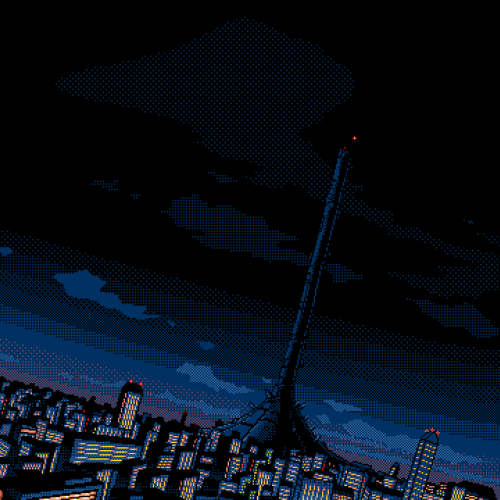

Deus Ex Machina

Duration
08 Feb 1999 - 08 Feb 2024
25 Years
Technologies
Android
React JS
Wired Network
Microchip
Deus Ex Machina adalah sebuah prototipe yang dibuat dalam project pembuatan mesin otak manusia. Proyek ini menghabiskan waktu selama 15 tahun 2 bulan dan memiliki tujuan untuk mengembangkan sebuah mesin yang dapat meniru kemampuan otak manusia dalam memproses informasi dan pengambilan keputusan. Mesin ini diharapkan dapat digunakan untuk mempercepat penemuan dan inovasi yang akan membantu memecahkan berbagai masalah kompleks di dunia. Meskipun masih dalam tahap prototipe, Deus Ex Machina menjadi tonggak penting bagi perkembangan teknologi di masa depan.